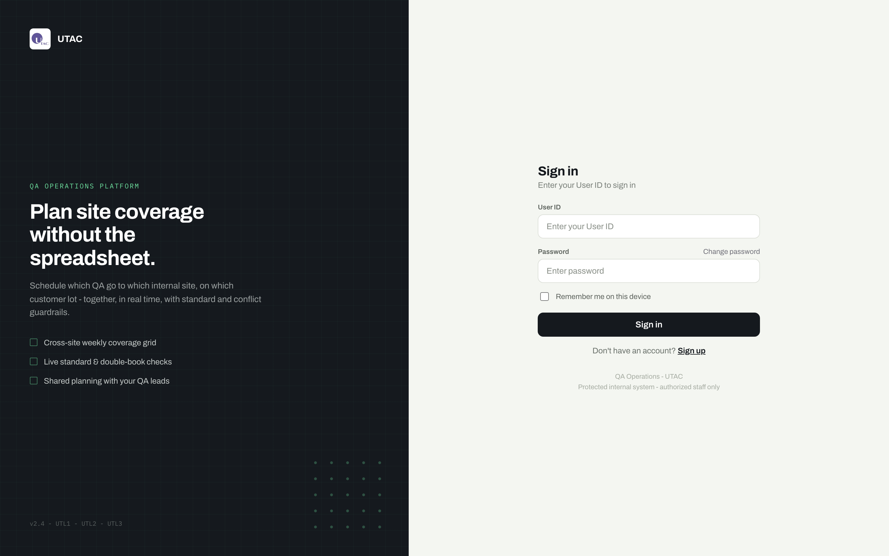
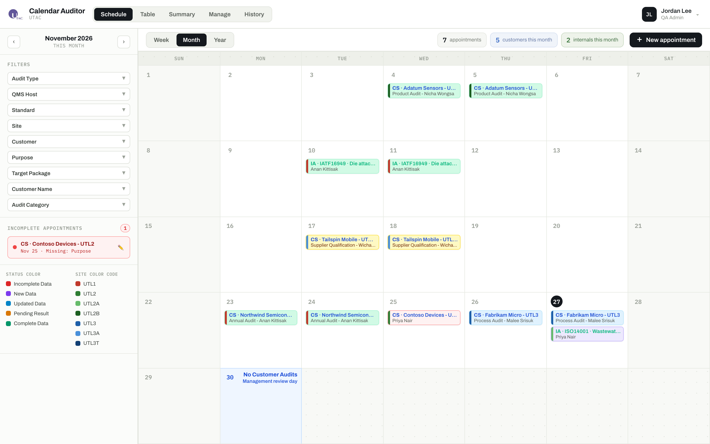
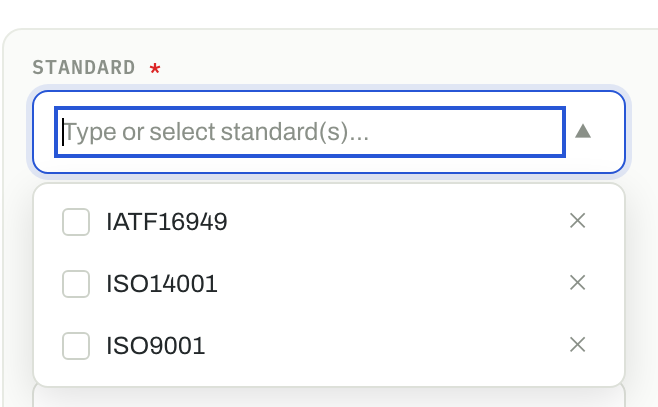
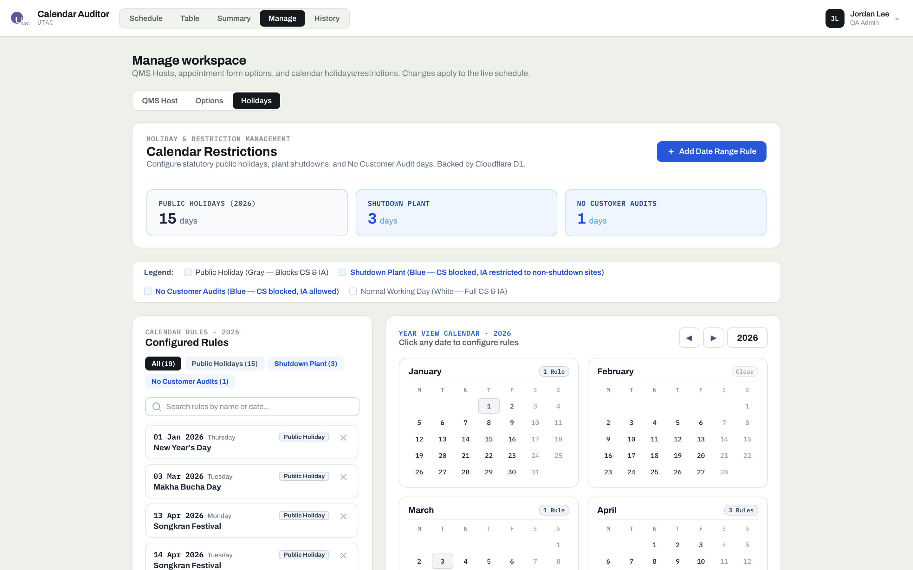
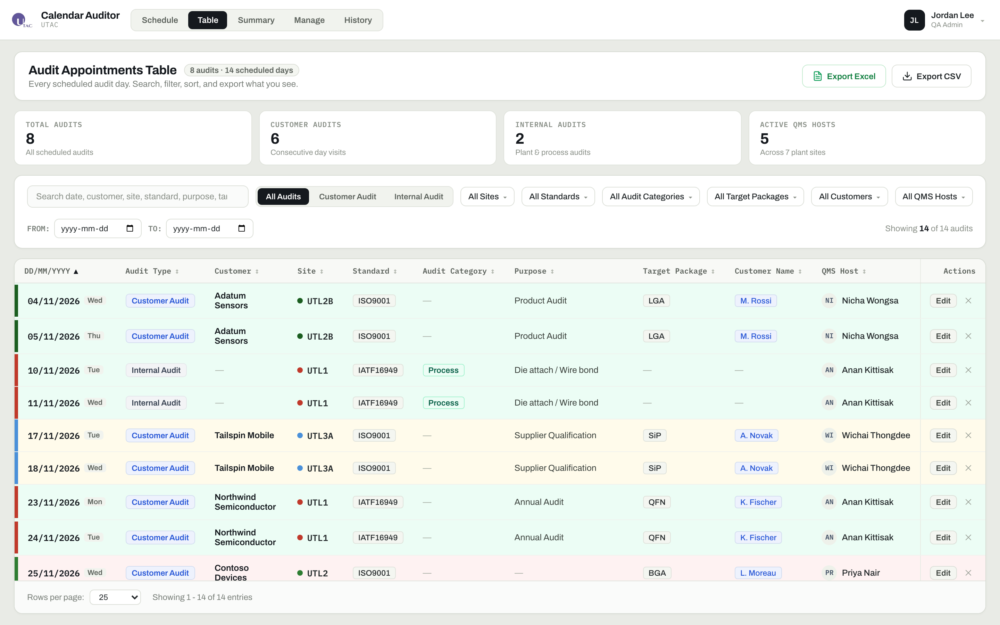

คู่มือผู้ใช้
วิธีวางแผน Customer Audit (CS) และ Internal Audit (IA) ใน UTAC QA Calendar (QMS-CASS) ซึ่งในแอปแสดงชื่อว่า Calendar Auditor รวมถึงการบันทึกผลตรวจ การดูแลข้อมูลที่อยู่เบื้องหลัง และการจัดทำรายงาน ส่วนแรกอธิบายว่าปฏิทินทำงานอย่างไร ส่วนที่สองเป็นขั้นตอนการทำงานแยกตามบทบาท
สารบัญ
- 1ก่อนเริ่มใช้งานเบราว์เซอร์ · เข้าสู่ระบบ · เมนูหลัก
- 2ปฏิทินทำงานอย่างไรไซต์ · สถานะของนัดหมาย · กฎของวัน · ฟิลด์ที่จำเป็น
- 3QA Planner: วางแผนการตรวจสร้าง Customer Audit (CS) · สร้าง Internal Audit (IA) · ค้นหา แก้ไข หรือลบนัดหมาย
- 4QMS Host: ตรวจตารางและบันทึกผลตรวจการตรวจที่ได้รับมอบหมาย · บันทึกผลตรวจ
- 5QA Admin: ดูแล QMS Host ตัวเลือก และวันหยุดQMS Host · ตัวเลือกในแบบฟอร์ม · วันหยุดและข้อจำกัด
- 6รายงาน: ค้นหา ส่งออก และดูประวัติTable และการส่งออก · Summary · History
- 7ตรวจสอบก่อนจบวัน
- 8แก้ปัญหาเบื้องต้น
1ก่อนเริ่มใช้งาน
1.1เบราว์เซอร์
ใช้ Microsoft Edge (เบราว์เซอร์มาตรฐานของ UTAC) หรือ Google Chrome เวอร์ชันปัจจุบันในหน้าต่างปกติ
- หลีกเลี่ยงหน้าต่าง InPrivate หรือ Incognito เพราะจะต้องเข้าสู่ระบบใหม่ทุกครั้ง
- อย่าตั้งค่าให้เบราว์เซอร์ล้าง cookies และข้อมูลเว็บไซต์เมื่อปิด มิฉะนั้นจะต้องเข้าสู่ระบบใหม่ทุกครั้ง
- อนุญาตการดาวน์โหลดจากแอป เพื่อให้บันทึกไฟล์ส่งออก Excel (
.xlsx) และ CSV ได้
1.2เข้าสู่ระบบ
- กรอก User ID และ Password แล้วเลือก Sign in ระบบจะเปิดหน้า Schedule ของเดือนปัจจุบัน
- ติ๊ก Remember me on this device เพื่อคงการเข้าสู่ระบบไว้ได้นานสูงสุด 30 วัน หากไม่ติ๊ก เซสชันจะสิ้นสุดเมื่อปิดเบราว์เซอร์ และอยู่ได้นานสุด 12 ชั่วโมง
- บัญชีใหม่: เลือก Sign up แล้วกรอก User ID (อย่างน้อย 3 ตัว ใช้ตัวอักษร ตัวเลข
.,_หรือ-), Staff registration code (รับจากผู้ดูแลระบบ), Password (อย่างน้อย 4 ตัว) และ Confirm password จากนั้นระบบจะกลับไปที่หน้า Sign in ให้เข้าสู่ระบบด้วยบัญชีใหม่ - เปลี่ยนรหัสผ่าน: เลือก Change password และกรอกรหัสผ่านปัจจุบันก่อน เมื่อเปลี่ยนแล้วทุกเซสชันของบัญชีจะสิ้นสุด ให้เข้าสู่ระบบใหม่ด้วยรหัสใหม่ ระบบไม่มีการรีเซ็ตแบบ "forgot password" หากลืมรหัสผ่าน ให้ติดต่อผู้ดูแลระบบ

1.3เมนูหลัก
แถบด้านบนมี 5 หน้า: Schedule (ปฏิทิน), Table (รายการที่ค้นหาได้), Summary (สรุปรายปี), Manage (QMS Host ตัวเลือก และวันหยุด) และ History (ประวัติการเปลี่ยนแปลง) เปิดเมนูใต้ชื่อของคุณเพื่อไปที่ Your profile และ Sign out บนโทรศัพท์ (หรือหน้าต่างที่แคบกว่า 860px) ทั้ง 5 หน้าจะอยู่ที่แถบด้านล่างของหน้าจอ และ Table กับ History จะแสดงแต่ละรายการเป็นการ์ด ส่วนตัวกรองใน Table เปิดได้ด้วยปุ่ม Filters บนโทรศัพท์ แถบใต้ Week / Month / Year จะแสดงสัปดาห์ เดือน หรือปีที่กำลังดู พร้อมปุ่ม Today และลูกศรสำหรับเลื่อน ในมุมมอง Week แตะวันในแถบวันทำการ ในมุมมอง Month แต่ละวันจะแสดงจุดหนึ่งจุดต่อหนึ่งนัดหมายตามสีสถานะ แตะวันเพื่อดูรายการนัดหมายของวันนั้นใต้ปฏิทิน

2ปฏิทินทำงานอย่างไร
2.1ไซต์
ปฏิทินครอบคลุม 7 ไซต์ แต่ละไซต์มีสีประจำที่ใช้กับแถบด้านซ้ายของการ์ด สีปัจจุบันดูได้ที่ Site Color Code ในแถบด้านข้างของหน้า Schedule ผู้ดูแลระบบเปลี่ยนสี รวมถึงเพิ่มหรือลบไซต์ได้ที่ Manage → Options → Site (ช่องสีข้างแต่ละไซต์) กฎ Shutdown Plant ล็อกได้เฉพาะ 7 ไซต์ด้านล่างนี้เท่านั้น
| ไซต์ | สีเริ่มต้น |
|---|---|
| UTL1 | #c0392b |
| UTL2 | #2e7d32 |
| UTL2A | #66bb6a |
| UTL2B | #1b5e20 |
| UTL3 | #1e5fa8 |
| UTL3A | #4a90d9 |
| UTL3T | #123f73 |
2.2สถานะของนัดหมาย
สีพื้นของการ์ดบอกสถานะ ระบบคำนวณสถานะให้เอง ผู้ใช้ไม่ต้องตั้งค่าเอง
| สี | สถานะ | ความหมาย | สิ่งที่ต้องทำ |
|---|---|---|---|
| แดง | Incomplete Data | ฟิลด์ที่จำเป็นหรือช่วงวันที่ยังไม่ครบ | ดูได้ที่ Incomplete Appointments ในแถบด้านข้างของหน้า Schedule แต่ละรายการแสดง "Missing: …" คลิกรายการเพื่อเปิดแบบฟอร์ม |
| น้ำเงิน | Updated Data | ข้อมูลครบ และมีการแก้ไขภายใน 7 วันที่ผ่านมา (การบันทึกผลตรวจนับเป็นการแก้ไข) | ตรวจว่าการแก้ไขถูกต้อง |
| ม่วง | New Data | ข้อมูลครบ และสร้างภายใน 7 วันที่ผ่านมา | ไม่ต้องทำอะไร เป็นนัดหมายใหม่ |
| อำพัน | Pending Result | ถึงวันแรกของการตรวจแล้ว ยังไม่มีการบันทึกผลที่มากกว่า 0 และไม่ได้สร้างหรือแก้ไขภายใน 7 วันที่ผ่านมา | บันทึกผลตรวจ |
| เขียว | Complete Data | ข้อมูลครบและไม่มีงานค้าง | ไม่ต้องทำอะไร |
ระบบตรวจตามลำดับในตาราง: แดงก่อน แล้วน้ำเงิน ม่วง อำพัน และสุดท้ายเขียว ดังนั้นนัดหมายที่สร้างในสัปดาห์นี้แล้วถูกแก้ไข จะแสดงเป็นน้ำเงิน ไม่ใช่ม่วง และการตรวจที่เลยวันตรวจไปแล้วจะแสดงเป็นม่วงหรือน้ำเงิน ไม่ใช่อำพัน ตราบใดที่ยังมีอายุไม่ถึง 7 วัน

2.3กฎของวัน
ช่องวันบอกว่าวันนั้นรับการตรวจได้หรือไม่ ให้อ่านป้ายบนช่องวันทุกครั้ง
| ช่องวัน | กฎ | Customer Audit (CS) | Internal Audit (IA) |
|---|---|---|---|
| ขาว | วันทำงานปกติ | อนุญาต | อนุญาต |
| เทา | Public Holiday | ไม่ถูกจอง และถูกข้ามเมื่ออยู่ในช่วงวันที่ | ไม่ถูกจอง และถูกข้ามเมื่ออยู่ในช่วงวันที่ |
| น้ำเงิน | No Customer Audits | ห้าม: ช่วงวันที่ของ CS ที่มีวันนี้อยู่ด้วยจะบันทึกไม่ได้ | อนุญาต |
| น้ำเงิน | Shutdown Plant | ห้าม: ช่วงวันที่ของ CS ที่มีวันนี้อยู่ด้วยจะบันทึกไม่ได้ | อนุญาตเฉพาะไซต์ที่กฎไม่ได้ล็อก |
- วันเสาร์-อาทิตย์และวันหยุดนักขัตฤกษ์ที่อยู่ในช่วงวันที่จะถูกข้าม และระบบจะจองวันที่เหลือ หากทุกวันในช่วงถูกข้ามทั้งหมด ระบบจะไม่ยอมบันทึก ช่องวันเสาร์-อาทิตย์และวันหยุดคลิกไม่ได้
- เมื่อช่วงวันที่มีวัน
No Customer AuditsหรือShutdown Plantแบบฟอร์มจะเปลี่ยนเป็น Internal Audit และไซต์ที่ถูกล็อกโดยShutdown Plantจะถูกนำออกจาก Site - การเลือก Reset to Normal Day ที่วันหยุดนักขัตฤกษ์ซึ่งระบบตั้งไว้ให้ จะเปลี่ยนวันนั้นเป็นวันทำงาน (
Working Day) - กฎวันหยุดไม่ย้ายหรือลบนัดหมายที่มีอยู่แล้ว นัดหมายในวันที่ภายหลังกลายเป็นวันหยุดนักขัตฤกษ์จะเปิดจากหน้า Schedule ไม่ได้ ให้แก้ไขหรือลบจากหน้า Table
2.4ฟิลด์ที่จำเป็น
| ประเภท | ฟิลด์ที่จำเป็น |
|---|---|
| Customer Audit (CS) | Standard, Site, Customer, End Customer, Purpose, Target Package, Customer Name, QMS Host และช่วงวันที่ที่ถูกต้อง |
| Internal Audit (IA) | Standard, Site, Audit Category, Area, QMS Host และช่วงวันที่ที่ถูกต้อง |
บันทึกนัดหมายได้แม้ยังกรอกไม่ครบทุกฟิลด์ แต่ปุ่ม Create appointment จะกดไม่ได้จนกว่าจะมีค่าในฟิลด์หลักอย่างน้อยหนึ่งฟิลด์: สำหรับ CS คือฟิลด์ใดฟิลด์หนึ่งใน Customer, Standard, Site, Customer Name, Purpose หรือ QMS Host สำหรับ IA คือฟิลด์ใดฟิลด์หนึ่งใน Audit Category, Area, Standard, Site หรือ QMS Host หากเว้นวันที่ From ไว้ ระบบจะใช้วันนี้ นัดหมายที่ยังไม่ครบจะเป็นสีแดง และแสดงในรายการ Incomplete Appointments จนกว่าจะกรอกครบ
3QA Planner: วางแผนการตรวจ
3.1สร้าง Customer Audit (CS)
- เปิด Schedule เลือก Month แล้วใช้ลูกศรไปยังเดือนที่ต้องวางแผน
- ตรวจช่องวัน หากมีวัน
No Customer AuditsหรือShutdown Plantอยู่ในช่วงวันที่ จะจอง CS ไม่ได้ ส่วนวันเสาร์-อาทิตย์และวันหยุดนักขัตฤกษ์จะถูกข้าม - เลือก New appointment หรือคลิกวันที่เพื่อเปิดรายการของวันนั้น แล้วเลือก + New Appointment ระบบเลือก Customer Audit ไว้ให้แล้ว ยกเว้นวันนั้นเป็นวัน
No Customer AuditsหรือShutdown Plant - กรอก 8 ฟิลด์ของ CS และกำหนด From และ To วันสิ้นสุดต้องไม่อยู่ก่อนวันเริ่ม
- เลือก Create appointment
- ตรวจว่าการ์ดอยู่ในวันและไซต์ที่ถูกต้อง หากเป็นสีแดง ให้กรอกให้ครบจาก Incomplete Appointments

Customer และ End Customer รับได้ค่าเดียว: พิมพ์เพื่อค้นหา หรือพิมพ์ชื่อใหม่ ส่วน Standard, Site, Purpose, Target Package, Customer Name และ QMS Host (รวมถึง Area สำหรับ IA) รับได้หลายค่า: พิมพ์เพื่อกรอง ติ๊กค่าที่ต้องการ หรือเพิ่มค่าใหม่ด้วย ＋ Add "…" ปุ่ม × บนแท็กที่เลือกไว้จะนำค่านั้นออกจากนัดหมายนี้เท่านั้น ส่วนปุ่ม ✕ ข้างค่าในรายการที่เปิดอยู่จะลบค่านั้นออกจากรายการตัวเลือกที่ใช้ร่วมกัน ซึ่งมีผลกับทุกคน

3.2สร้าง Internal Audit (IA)
- เลือกวันปกติ วัน
No Customer AuditsหรือวันShutdown Plantที่กฎไม่ได้ล็อกไซต์ของคุณ - เลือก New appointment หรือคลิกวันที่แล้วเลือก + New Appointment จากนั้นเลือก Internal Audit
- กรอก 5 ฟิลด์ของ IA และช่วงวันที่ ในช่อง Area เลือกได้หลายค่าหรือเพิ่มค่าใหม่ หลายค่าจะแสดงคั่นด้วย
/ - เลือก Create appointment แล้วตรวจการ์ด
3.3ค้นหา แก้ไข หรือลบนัดหมาย
- กรองปฏิทินด้วยตัวกรองที่แถบด้านข้าง: Audit Type, QMS Host, Standard, Site, Customer, Purpose, Target Package, Customer Name, Audit Category กด Clear all เพื่อล้างตัวกรอง ตัวกรองเปลี่ยนเฉพาะสิ่งที่คุณเห็นเท่านั้น
- คลิกวันเพื่อเปิดรายการของวันนั้น การ์ดแต่ละใบมี Audit Results (ไอคอนคลิปบอร์ด) ไอคอนรูปตาเพื่อดูรายละเอียด ✏️ เพื่อแก้ไข และ ✕ เพื่อลบ
- สำหรับนัดหมายหลายวัน หน้า Schedule จะถามว่า Edit this day only หรือ Edit entire appointment และ Delete this day only หรือ Delete entire appointment เมื่อแก้ไขเพียงวันเดียว ช่อง From และ To จะถูกล็อก
- เลือก Save changes แล้วตรวจวัน ไซต์ และสถานะอีกครั้ง

4QMS Host: ตรวจตารางและบันทึกผล
4.1ตรวจการตรวจที่ได้รับมอบหมาย
- เปิด Schedule แล้วกรองด้วยชื่อของคุณใน QMS Host และด้วย Site ของคุณ
- ตรวจวันที่ ไซต์ ประเภทการตรวจ Standard และ Customer (CS) หรือ Area (IA)
- หากข้อมูลไม่ถูกต้อง ให้แจ้ง QA Planner แทนการแก้เองโดยไม่ได้รับอนุมัติ
- ก่อนตรวจ IA ในวัน
Shutdown Plantให้ยืนยันว่าไซต์ของคุณไม่ถูกล็อก
4.2บันทึกผลตรวจ
- เปิดนัดหมายแล้วเลือกไอคอน Audit Results
- กรอก Major, Minor, OFI, OBS และ Finding(s) ของแต่ละไซต์ แถวจะครอบคลุมทุกไซต์ในชุดนัดหมาย (มีแถว General แถวเดียวหากไม่มีไซต์)
- ตรวจตัวเลขและไซต์ แล้วเลือก Save Results ผลตรวจใช้กับทั้งชุดของนัดหมายหลายวัน
- สำหรับข้อมูลส่งต่องาน ให้ขยายการ์ดแล้วใช้ส่วน NOTES โน้ตเป็นของวันนั้นเท่านั้น และไม่ได้บันทึกว่าใครเขียนหรือเขียนเมื่อใด (ทุกโน้ตแสดง "You" และ "just now") จึงควรใส่ชื่อและวันที่ไว้ในข้อความ
- หลัง Save Results การ์ดจะเป็นสีน้ำเงินเป็นเวลา 7 วัน แล้วจึงเปลี่ยนเป็นสีเขียว
5QA Admin: ดูแล QMS Host ตัวเลือก และวันหยุด
5.1QMS Host
- เปิด Manage → QMS Host
- กรองด้วย Site, Standard หรือ Department เพื่อหาคนที่ต้องการ
- เลือก New QMS Host เพื่อเพิ่มคน หรือคลิกแถวเพื่อแก้ Name, Site, Standard (Internal Audit / Customer Audit) และ Department (QA / Non-QA) บันทึกด้วย Create QMS Host หรือ Save Changes การเปลี่ยนชื่อ host จะเปลี่ยนชื่อในนัดหมายที่มีอยู่ของคนนั้นด้วย
- หากต้องการลบ host ให้ย้ายนัดหมายของคนนั้นไปให้คนอื่นก่อน ระบบจะไม่ยอมลบ host ที่ยังอยู่ในนัดหมายใด ๆ ไม่ว่าจะเป็นนัดหมายในอดีตหรืออนาคต
คุณลากแถวได้ แต่ลำดับใหม่จะไม่ถูกบันทึก: ลำดับจะกลับเป็นแบบเดิมเมื่อโหลดหน้าใหม่ และคนอื่นจะไม่เห็นลำดับนั้น

5.2ตัวเลือกในแบบฟอร์ม
- เปิด Manage → Options ระบบแสดงทุกกลุ่ม: Site (พร้อมช่องสี), Standard (Internal Audit และ Customer Audit), Customer, End Customer, Purpose, Target Package, Customer Name และ Audit Category
- เพิ่มค่าด้วยช่องข้อความและ + Add (หรือกด Enter) ลากค่าเพื่อเรียงลำดับใหม่ และลบค่าด้วย ✕ ตรวจตัวสะกดและค่าซ้ำก่อน
- ระบบจะไม่ยอมลบค่าที่ยังมีนัดหมายใช้อยู่ (ทุกกลุ่มยกเว้น Audit Category) การลบนัดหมายสุดท้ายที่ใช้ค่า Customer, End Customer, Purpose หรือ Audit Category จะลบค่านั้นออกจาก Options ด้วย
5.3วันหยุดและข้อจำกัด
- เปิด Manage → Holidays เปลี่ยนปีด้วยลูกศร หรือพิมพ์ปี 4 หลักแล้วกด Enter
- คลิกวันที่ หรือเลือก Add Date Range Rule ในหน้าต่าง Configure Calendar Status ให้เลือก Public / General Holiday, Shutdown Plant หรือ No Customer Audits กฎใหม่จะเริ่มต้นเป็น No Customer Audits จึงต้องตรวจตัวเลือกให้ดี
- สำหรับ
Shutdown Plantให้ติ๊กไซต์ที่ต้องล็อกใน Affected Sites (Shutdown) ค่าเริ่มต้นไม่มีไซต์ถูกติ๊ก ใช้ Select All หากกระทบทุกไซต์ ปุ่ม Save Status จะกดไม่ได้จนกว่าจะติ๊กอย่างน้อยหนึ่งไซต์ - กรอก Holiday name / note (ไม่บังคับ) ตรวจวันที่ กฎ และไซต์ แล้วเลือก Save Status
- เลือกการ์ด Public Holidays เพื่อดูวันหยุดของปีเรียงตามวันที่ ใช้ Reset to Normal Day เพื่อล้างกฎของวันนั้น

6รายงาน: ค้นหา ส่งออก และดูประวัติ
6.1Table และการส่งออก
- เปิด Table ค้นหาด้วยข้อความ หรือใช้ตัวกรอง All Audits / Customer Audit / Internal Audit, All Sites, All Standards, All Audit Categories, All Target Packages, All Customers, All QMS Hosts และวันที่ From / To
- คลิกหัวคอลัมน์เพื่อเรียง คลิกซ้ำเพื่อกลับลำดับ Reset filters ล้างเงื่อนไขทั้งหมด
- ตรวจจำนวนที่ส่วนหัว ("N audits · M scheduled days") แล้วเลือก Export Excel หรือ Export CSV ไฟล์จะมีทุกแถวที่ผ่านตัวกรอง เรียงตามลำดับปัจจุบัน ครบทุกหน้า โดยหนึ่งแถวคือหนึ่งวันที่จัดตารางไว้: Date, Audit Type, Customer, Site, Standard, Audit Category, Purpose (Area สำหรับ IA), Target Package, Customer Name และ QMS Host ไม่รวม End Customer ผลตรวจ และโน้ต
- เปิดไฟล์ ตรวจหัวคอลัมน์ จำนวนแถว และไซต์ตัวอย่างก่อนส่งต่อ

6.2Summary
เปิด Summary เพื่อดูยอดรวมของปี: จำนวนการตรวจ การเข้าตรวจของลูกค้าแยกตามไซต์และเดือน และผลตรวจแยกตามไซต์ เลือกปีด้วยลูกศรหรือช่องปี
- Audit Visits by Site → Export to Excel ดาวน์โหลดไฟล์
audit-visits-YEAR.xlsx(นับเฉพาะวันตรวจรายไซต์ของ Customer Audit) - Audit Findings by Site → Export to Excel มีตัวเลือก Export All Sites (Full Matrix), Export Summary Only หรือเลือกไซต์เดียว

6.3History
เปิด History เพื่อดูว่าทุกคนเปลี่ยนแปลงอะไรบ้าง ได้แก่ นัดหมาย ผลตรวจ ตัวเลือก และกฎวันหยุด เซิร์ฟเวอร์บันทึกว่าใครเป็นผู้เปลี่ยนแปลงแต่ละรายการและเปลี่ยนเมื่อใด ชื่อที่แสดงจึงเป็นบัญชีที่เข้าสู่ระบบอยู่ในขณะนั้น กรองด้วยข้อความ Action, Entity และช่วงวันที่ เวลาแสดงตามเวลาท้องถิ่นของคุณ History จะโหลดการเปลี่ยนแปลงล่าสุด 200 รายการก่อน เลือก Load older changes ที่ด้านล่างเพื่อดูรายการก่อนหน้า (ตัวกรองค้นหาเฉพาะการเปลี่ยนแปลงที่โหลดมาแล้ว) ระบบไม่บันทึกการเปลี่ยนแปลงรายชื่อ QMS Host ในหน้า Manage หากพบสิ่งผิดปกติ ให้จดเวลาและรายการ แล้วติดต่อ QA Admin

7ตรวจสอบก่อนจบวัน
- QA Planner: ไม่มีการ์ดสีแดงค้าง นัดหมายใหม่และที่แก้ไขมีวันที่และผู้รับผิดชอบถูกต้อง
- QMS Host: บันทึกผลของการตรวจที่เสร็จแล้ว รายการที่ค้างมีผู้รับผิดชอบและวันติดตาม
- QA Admin: ตรวจคำขอแก้ข้อมูลหลักและกฎวันหยุดกับไซต์และวันที่ที่ถูกต้อง
- ผู้ทำรายงาน: ยืนยันตัวกรองและช่วงเวลาก่อนส่งไฟล์
- ทุกคน: Sign out เมื่อใช้เครื่องร่วมกัน
8แก้ปัญหาเบื้องต้น
| ปัญหา | สิ่งที่ต้องตรวจ |
|---|---|
| ไม่พบนัดหมาย | เดือนหรือปี มุมมอง (Week / Month / Year) และตัวกรองที่ใช้อยู่ ลองกด Clear all มุมมองเดือนแสดงการ์ดได้สูงสุด 3 ใบต่อวัน พร้อม "+N more" |
| การ์ดเป็นสีแดง | Incomplete Appointments ในแถบด้านข้างของหน้า Schedule แสดง "Missing: …" ของการ์ดนั้น |
| จอง CS ไม่ได้ | มีวัน No Customer Audits หรือ Shutdown Plant อยู่ในช่วงวันที่ หรือทุกวันในช่วงเป็นวันเสาร์-อาทิตย์หรือวันหยุดนักขัตฤกษ์ |
| จอง IA ไม่ได้ | ทุกวันในช่วงเป็นวันเสาร์-อาทิตย์หรือวันหยุดนักขัตฤกษ์ หรือมีวัน Shutdown Plant ในช่วงวันที่ที่ล็อกไซต์ของคุณไซต์ใดไซต์หนึ่ง |
| เปิดนัดหมายจากหน้า Schedule ไม่ได้ | วันนั้นกลายเป็นวันหยุดนักขัตฤกษ์ ให้เปิดจากหน้า Table |
| ข้อมูลดูไม่เป็นปัจจุบัน หรือทุกการเปลี่ยนแปลงแสดง "A change could not be saved to the shared calendar" | เซสชันของคุณสิ้นสุดแล้ว (ปิดเบราว์เซอร์โดยไม่ได้ติ๊ก Remember me, ครบกำหนด 12 ชั่วโมงหรือ 30 วัน หรือมีการเปลี่ยนรหัสผ่าน) แต่แอปยังแสดงสำเนาข้อมูลในเบราว์เซอร์นี้อยู่ ให้เลือก Sign out แล้วเข้าสู่ระบบใหม่ |
| การเปลี่ยนแปลงหายไปหลังรีเฟรช | อ่านข้อความแจ้งเตือนและตรวจการเชื่อมต่อ แจ้งปัญหาก่อนลองทำซ้ำ |
| ไฟล์ส่งออกไม่ตรง | ตัวกรอง ช่วงวันที่ ปี และจำนวนผลลัพธ์ |
| หน้าเข้าสู่ระบบขึ้นมาทุกครั้ง | ใช้ InPrivate/Incognito หรือเบราว์เซอร์ล้างข้อมูลเว็บไซต์เมื่อปิด |
| เข้าสู่ระบบหรือสมัครไม่ได้ | ตรวจ User ID และรหัสผ่าน ขอรหัสลงทะเบียนจากผู้ดูแลระบบ หรือขอให้รีเซ็ตรหัสผ่านที่ลืม |
เมื่อแจ้งปัญหา ให้ระบุหน้า เวลา ไซต์ และขั้นตอนที่ทำ และลบข้อมูลลูกค้าออกจากภาพหน้าจอ